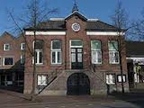
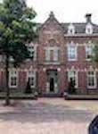

Het oude raadhuis en klooster

Het Heuvelplein te Beek is een stemmig driehoekig dorpsplein met bomen, een
prieellinde en enkele karakteristieke oude huizen. Van hieruit liepen wegen naar
vele richtingen. Ook was hier het bestuurlijk centrum van de gemeente.
De Waterstaatskerk werd midden op het plein gebouwd maar in 1936 gesloopt,
waardoor het plein weer intact was. Daarnaast vindt men er:
Het oude raadhuis; dit gebouw aan het Heuvelplein is in 1866 gebouwd en deed dienst
tot 1971. Sindsdien worden er exposities gehouden. Ook is het sinds 2006 weer mogelijk om
huwelijken te laten voltrekken in het oude raadhuis.
Klooster der Zeven Zusters; Voorheen was dit het Sint-Josephklooster. Dit klooster
is geopend in 1895. Architect was Heykant uit Erp. De naam Zeven Zusters heeft betrekking op de zeven zusters die er aanvankelijk in trokken. Zij behoorden tot de congregatie van de Zusters van Liefde van Schijndel. Tot 1985 hebben deze zusters het onderwijs verzorgd. In 2004 is het klooster grondig gerenoveerd en zijn er woningen in gebouwd. Ook zijn er achter het klooster een groot aantal woningen bijgebouwd.
Kasteel Eikenlust; gesitueerd links naast de weg naar Gemert. Het kasteel behoort al
generaties lang tot de familie De Jong van Beek en Donk.
Bezienswaardigheden
**Op de begraafplaats naast de Leonarduskerk bevindt
zich het eregraf van Piet van Thiel. De grafsteen is gedupliceerd
en het origineel
bevindt zich tegen de kerkmuur, waar het in 2006 geplaatst is. Op de steen bevindt zich het gedicht:
't Werk en de Kerk was 't doel van mijn leven
Arbeid gezegend, verrezen Gods Huis
Hoopvol, mijn God, na een rusteloos leven
Vind ik hier rust in de schaduw van 't Kruis
Naast het graf van Piet van Thiel vindt men nog de graven van tal van andere leden
van de uitgebreide familie, alsmede een grafkelder die aan deze familie toebehoort.
**Bronzen beeld van De Spijkermaker uit 1993, van Antoon Grassens. Dit beeld herdenkt
het bedrijf van Piet van Thiel,
en in het bijzonder de spijkersmeden die daar werkten.
Het levensechte beeld toont bovendien een aantal kenmerkende gereedschappen. Het
bevindt zich op het Piet van Thielplein.
**Villa Vrededael, uit 1896, een fraaie fabrikantenvilla,
toebehorend aan een der zonen Van Thiel.
**Villa Leefdael, uit 1860, eveneens een fraaie fabrikantenvilla met torentje,
waar tegenwoordig een Grieks restaurant en een aantal bedrijven in zijn gevestigd.
**Historische fabrieksgebouwen van de firma Van Thiel, aan de noordoostelijke zijde
van de Zuid-Willemsvaart. Ze stammen uit 1907 en zijn gerestaureerd.
Er is een meubelzaak in gevestigd die het interieur goeddeels intact heeft gelaten,
inclusief gietijzeren pilaren.
**Bronzen beeldje Ingekeerd (Ainsi-soit-elle), uit 1994, gemaakt door Maïté Duval,
een vrouwelijk naakt in het park tussen Beek en Donk.